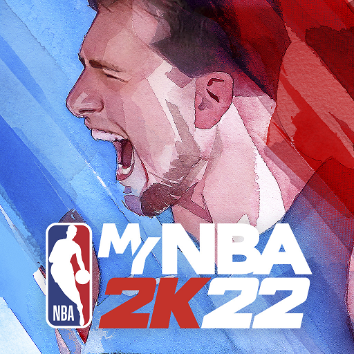

The NBA 2k series is comprised of twenty-three main installments along with several NBA 2k spin-offs. Each installment displays a different NBA athlete on the cover, and it is considered an honor within the NBA to be chosen as a cover athlete. NBA 2k debuted in 1999 with NBA player Allen Iverson as the cover athlete and has released every year since. The graphics and diversity within the game have dramatically improved as 2k22 marks the first year where a female WNBA athelete was put on the cover of a NBA 2k game.


Another piece of the franchise is the MyNBA 2k22 companion app available for download on mobile phone or tablet. This companion app inetgrates seamlessly with the NBA 2k game on your console and allows users even more access to customizable features. Users can use a face scan feature to personalize his or her MyPlayer to look like themselves, check their Virtual Credit balance (2k's in-game currency), Redeem special promotional codes, and keep up with the latest NBA 2k news.


NBA 2k Mobile is a mobile application that puts NBA 2k in the palm of your hands through your mobile device. Users can build their team of basketball All-Stars and experience authentic NBA plays and action from his or her phone or tablet. This free online basketball arcade game has most of the features available on the console version of NBA 2k; however, users can now play daily basketball objectives, build an NBA roster, access MyPlayer items, and step onto the virtual court on the go.